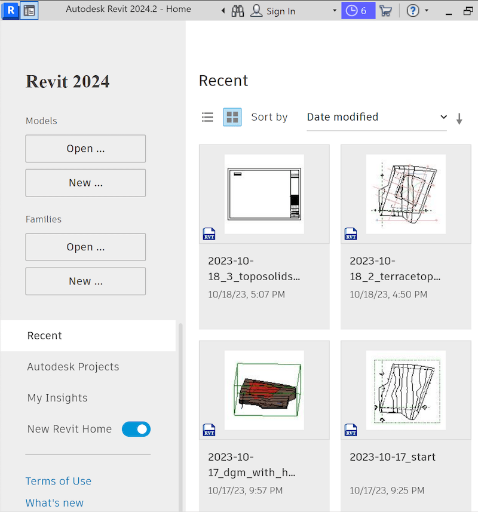

2024.2 is compatible with the previous 2024.1.1 update and can be used together with it on project work.
The 2024.1.1 and 2024.2 updates are especially important for work-sharing users.
In such a context, all project team members should be using at least these releases of Revit or higher to avoid
the extensible storage schema conflicts in Revit 2024
described below.
Other API-related enhancement include:
Fixed an issue in which API function Parameter.Definition.GetDataType().TypeId returned obsolete specs (spec schemas that inherit from the obsolete base specs "autodesk.spec:spec.int64-1.0.0", "autodesk.spec:spec.measurable-1.0.0", and "autodesk.spec:spec.string-1.0.0".)
Added an API for adding points (plural) on SlabShapeEditor
Fixed an issue when an element with Entity attached is operated by a user in an upgraded file and a previous version file is opened in the same session containing the same schema, cf. below
MEP Electrical Circuits: Improved the API ElectricalSystem.Create() to make it use the voltage of the first matched connector when creating an electrical system with the connectors whose voltages were mapped to an instance parameter, cf. ricaun's comment on the Revit API forum discussion thread
on NewElectricalSystem specify voltage and poles – thank you, Luiz!
Dynamo for Revit: Upgraded Dynamo Core version to 2.19.3. Please refer to
the DynamoDS 2.19 release notes for more details
Non-API-related enhancements cover Area Plans, Data Analytics, Design Option, Edit, Materials, Properties Dialog, UI Frameworks, Worksharing, Energy – Analytical Model and MEP Fabrication + Analytical Systems + Electrical Analytical + Electrical Circuits.
One import issue resolved by Revit 2024.2 and especially related to the Revit API addresses an extensible storage schema issue affecting addons and projects that are upgraded for Revit 2024,
cf. not able to delete extensible storage schema.
The 2024.1.1 and 2024.2 updates are especially important for work-sharing users.
In such a context, all project team members should be using at least these releases of Revit or higher to avoid the possibility of older versions of Revit 2024 reintroducing schema problems back to the project models.
To learn more about this issue, please refer to the support article
on schema conflicts in Revit 2024.
Universal Data Access UDA in Revit 2024.2
Revit 2024.2 includes a Tech Preview of the new Revit Home page, including Universal Data Access (UDA) components.
Revit customers using this version can access their data – including cloud data in BIM and ACC – with the same seamless experience as other products that have adopted UDA such as AutoCAD, Fusion, Civil3D and Inventor.
In Revit App Home, toggle the new Revit Home button to activate UDA:

UDA offers both a list view and grid view granting access to recent files data in ACC and Bing 360.
In the recent panel, you can use the pin command to secure files at the top of the list.
Filters are available to sort files by date and type and you can click on the column head to sort files.
Switching to grid view will reveal detailed preview thumbnails.
Pin command is also available in grid view.
The search functionality can be used to locate files within the Recent files.
Moving to the Autodesk Projects panel, users can explore cloud data.
You can switch between hubs, select a project and navigate through folders and files.
Use the column settings to adjust column visibility and display order.
Files in the cloud can be filtered by their dates and types.
Simply click on the file name to open it.
By clicking the top left toggle button, you can transition between app home and the design environment.
UDA offers flexibility, allowing product teams to incorporate their workflows into UDA, including features like relinquish file version management.
One of the significant benefits that UDA brings to rapid users is the search feature.
It enables users to find files and projects in the Autodesk cloud swiftly and easily.
Command entries are consistently available in both list view and grid view.
UDA allows products to display data items in various states.
In Revit, users can choose to hide projects and files not in the current version or opt to display them in a disabled state.
An enhanced tooltip is also provided for displaying detailed information.
We are looking forward to your valuable feedback on this functionality.